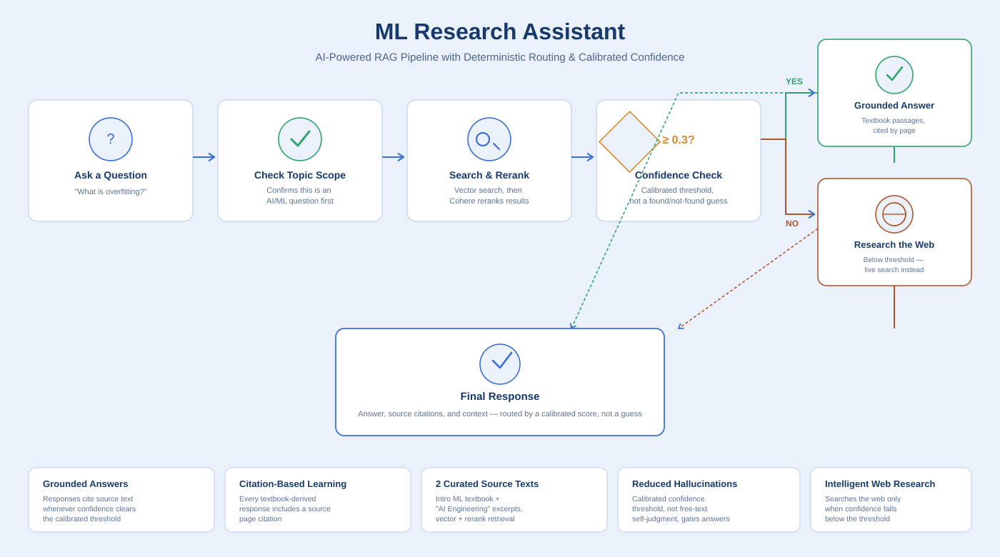
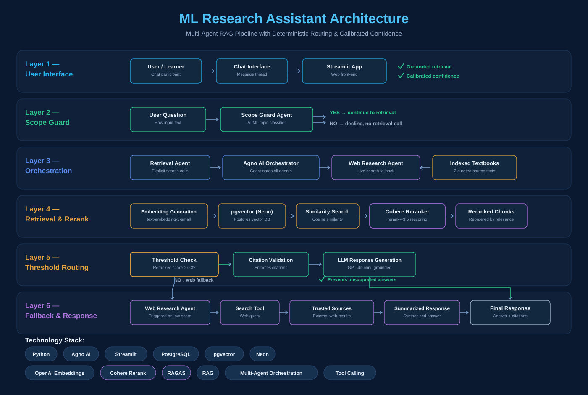

ML Research Assistant Knowledge Platform
A production RAG pipeline built on deterministic routing, a measured reranking layer, and an empirically calibrated confidence threshold — evaluated with RAGAS, not assumed to work
The Challenge
Students learning machine learning often rely on general-purpose AI assistants that may provide incomplete explanations, omit citations, or occasionally generate inaccurate information. The goal was to create an educational assistant that prioritizes trusted textbook knowledge before consulting external sources, helping learners receive more reliable and verifiable answers.
⚡ Solution
ML Research Assistant combines retrieval-augmented generation (RAG), a pre-retrieval scope guard, Cohere reranking, and citation enforcement to answer machine learning questions using authoritative textbook content. Rather than relying on an LLM's self-reported confidence, an explicit similarity threshold — empirically calibrated against known in-scope and out-of-scope queries — decides whether a question is answered from the textbooks or routed to a secondary research agent for controlled web fallback.
Workflow Overview

A user question first passes through a scope guard, which rejects anything outside AI, ML, and data science before any retrieval happens. In-scope questions are matched against an indexed knowledge base using semantic search, then rescored by a Cohere reranker. The reranked score is checked against a calibrated confidence threshold: at or above it, the passages are supplied to the language model to generate a grounded, citation-backed response; below it, a specialized research agent retrieves supplementary information from the web instead of stretching unrelated textbook content to fit.
Key Features
Deterministic Routing
A pre-retrieval scope guard rejects off-topic questions before any search runs, and a calibrated numeric threshold — not an LLM's self-reported judgment — decides whether a question is answered from the textbooks or routed to web fallback.
Measured Reranking
A Cohere reranking layer's actual impact was evaluated with RAGAS across independent multi-run comparisons rather than assumed — surfacing that its benefit is corpus-dependent, not guaranteed, and shipping it as a re-testable toggle rather than a fixed assumption.
Citation Enforcement
Retrieved passages are incorporated into every textbook-derived response, allowing learners to verify explanations against the original source material while helping reduce hallucinations.
Intelligent Fallback
When retrieval confidence falls below the calibrated threshold, a dedicated research agent performs web searches and synthesizes information before presenting the final response.
Evaluation & Calibration
Every architectural claim in this project was treated as a hypothesis to test, not an assumption to ship on. A 16-question golden dataset and a standalone RAGAS evaluation harness (Faithfulness, Context Recall, Factual Correctness) were used to measure real answer quality rather than trust intuition.
Reranker: Tested, Not Assumed
Across three independent runs per condition, the Cohere reranker showed a measurable ~7-point Factual Correctness improvement on a noisier source corpus, but no meaningful benefit on a cleaner, better-curated one — confirming that reranking value depends on how much the baseline retrieval is already struggling, not a universal given.
Threshold Calibrated on Evidence
The confidence threshold gating textbook vs. web-fallback routing was calibrated by scoring known in-scope and out-of-scope questions through the production retrieval path, confirming a clean separation between the two groups and a defensible margin around the chosen cutoff.
Technical Architecture

The architecture integrates Streamlit, Agno AI agents, embedding generation, PostgreSQL with pgvector (hosted on Neon), Cohere reranking, and LLM-based response generation. Role-based agent orchestration coordinates scope classification, retrieval, reranking, citation validation, and fallback web research, with a standalone RAGAS harness used to evaluate answer quality outside the live application.
Technology Stack
Future Roadmap
The current implementation indexes an introductory ML textbook alongside excerpts from a large language model engineering text, with a source swap already completed once — including re-chunking, golden dataset rework, and re-calibration — validating that the architecture holds up under real content changes, not just its original corpus. Near-term scaling means adding coverage for deep learning, reinforcement learning, and other AI disciplines; scaling further, toward larger institutional or organizational document repositories, would require metadata filtering, hybrid keyword-plus-vector search, and a much larger stratified evaluation set — with data governance and access control as the first real blocker, ahead of any retrieval engineering.
Demonstration Access
The application is deployed on Streamlit Community Cloud and is available through controlled access. Authentication protects commercial LLM API usage while allowing demonstrations of the complete retrieval, citation, and multi-agent workflow.